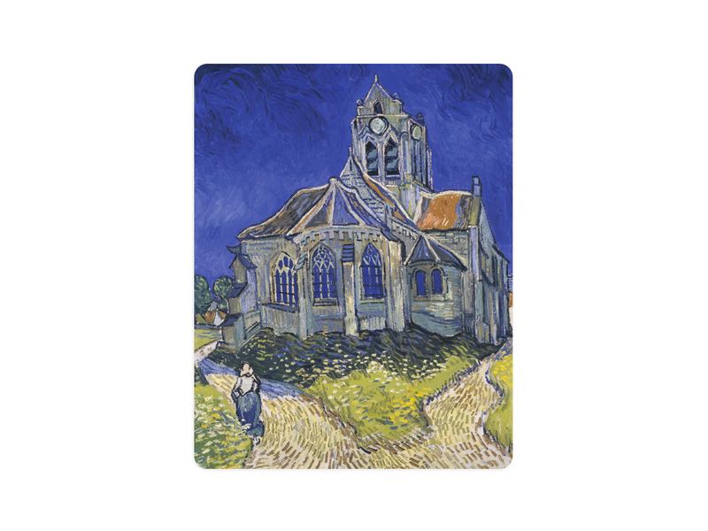
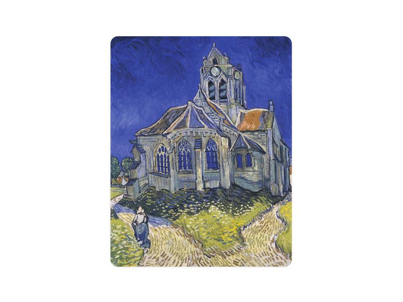

His Story
Vincent van Gogh (1853-1890) was a Dutch painter known for his expressive style and bold colors. After trying various jobs, he became an artist at 27, supported by his brother Theo. In Paris, he was influenced by Impressionism, and in 1888, he moved to Provence, painting Sunflowers and The Bedroom. Struggling with mental illness, he cut off part of his ear and later spent time in asylums, creating masterpieces like The Starry Night. In 1890, he died from a gunshot wound, believed to be self-inflicted. Though unrecognized in life, he is now one of history’s most celebrated artists.
See more about Van Gogh's Life
 
